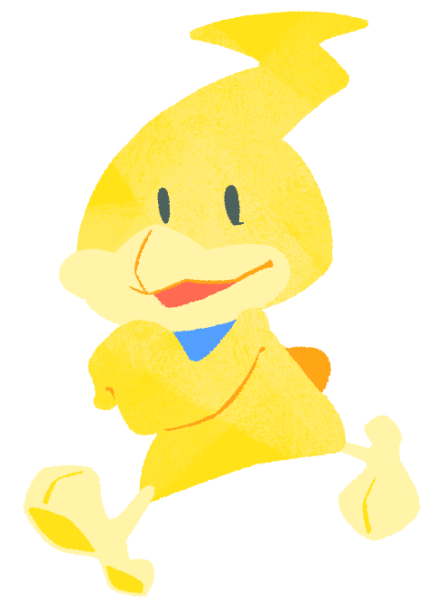

Hikarin (JP: Pikarin) (Male)One of Kururin's brothers who is only a year younger than him. He is yellow, and his hair looks like a lightning bolt. He is seemingly quick and energetic, and his hairstyle takes one hour to finish straightening each and every day. Tenko of the Magic Group appears to develop a crush on him during Kururin Paradise's credits, although this is not brought up again in Kururin Squash! |
 |